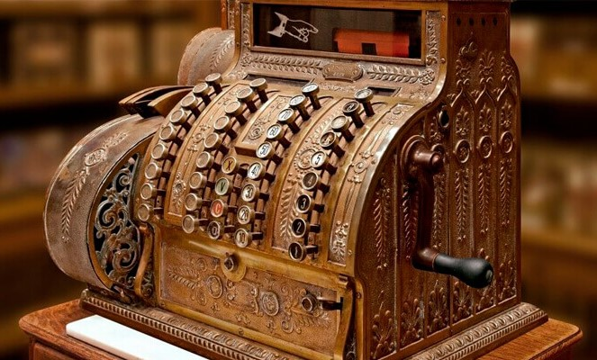
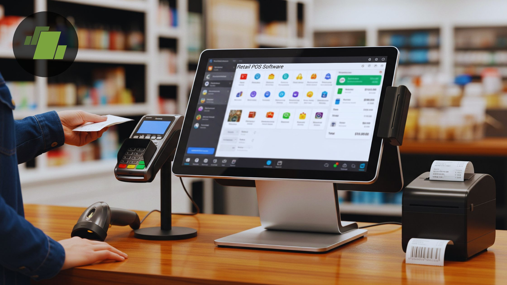
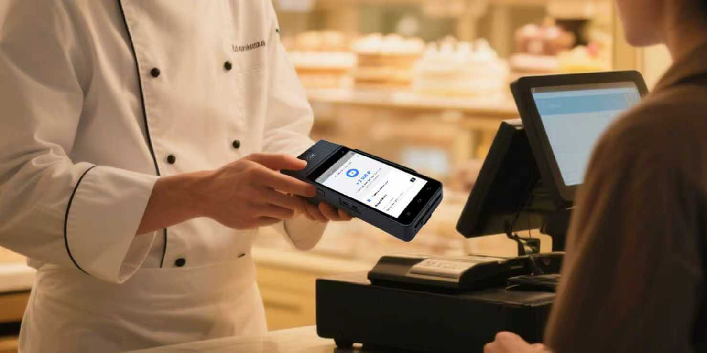

Описание кассового аппарата
Что такое кассовый аппарат
Кассовый аппарат — это устройство, предназначенное для регистрации и контроля денежных операций при продаже товаров и услуг. Он обеспечивает точный учёт финансовых операций, автоматизацию выдачи чеков и помогает вести контроль над продажами. Современные кассовые аппараты часто интегрируются с POS-системами, базами данных и аналитическим ПО.
Функциональные части кассового аппарата
- Монитор
- Принтер чеков
- Сканер штрих-кодов
- Платежный терминал
- Денежный ящик
Выбранная часть
История кассового аппарата
Первый кассовый аппарат был изобретён в 1879 году американцем Джеймсом Ритти, владельцем бара в Огайо. Целью изобретения было предотвращение хищений со стороны персонала и фиксация каждой продажи. Устройство представляло собой механическую коробку с кнопками и печатающим механизмом, который оставлял запись на бумажной ленте.

В начале XX века кассы начали оснащаться электрическими механизмами, что ускоряло обработку операций и уменьшало вероятность ошибок. В 1970-х годах появились электронные кассовые аппараты с цифровым дисплеем, встроенной памятью и функцией подсчёта итогов. С 1980-х годов кассы интегрируются с компьютерами и базами данных, что позволило автоматизировать отчётность, складской учёт и расчёт налогов.
Конструкторы и производители
Современные кассовые аппараты разрабатываются крупными компаниями, такими как NCR, Epson Sharp и другие. Разработчики учитывают удобство работы кассира, скорость обслуживания, возможность интеграции с банковскими терминалами, а также с аналитическими и складскими системами.

Важным направлением является эргономика: клавиши, сенсорные панели, расположение дисплея и принтера проектируются так, чтобы минимизировать время обслуживания и нагрузку на оператора.
Применение кассового аппарата
Кассовые аппараты применяются практически везде, где происходят продажи товаров и услуг: супермаркеты, магазины одежды, рестораны, кафе, аптеки, кинотеатры и прочие точки обслуживания клиентов. Они выполняют несколько функций:
- Регистрация продаж и печать чеков для клиентов;
- Учет денежных средств и контроль кассира;
- Применение скидок, акций и бонусных программ;
- Сбор статистики о продажах и анализ популярности товаров;
- Интеграция с банковскими терминалами для оплаты картами;
- Ведение складского учёта и автоматическая инвентаризация.

Современные функции и технологии
Современные кассовые аппараты это уже не просто "регистратор продаж". Это комплексные POS-системы, объединяющие аппаратную часть и программное обеспечение:
- Сканирование штрих-кодов и QR-кодов для ускорения обработки товаров;
- Автоматический расчёт итогов и налогов;
- Интеграция с банковскими терминалами, мобильными платежами и электронными кошельками;
- Поддержка лояльности клиентов: бонусные карты, скидки, промокоды;
- Облачные системы аналитики: отчёты о продажах, товарных остатках, эффективности кассиров;
- Возможность печати как бумажных чеков, так и электронных (по e-mail или SMS).
Заключение
Кассовый аппарат — это ключевое устройство в розничной торговле, которое обеспечивает:
- точный учёт продаж и денежных средств;
- контроль работы персонала;
- автоматизацию и ускорение обслуживания;
- сбор аналитических данных для управления магазином.
С появлением современных POS-систем кассовый аппарат превратился в интеллектуальный инструмент, объединяющий технологию, удобство и безопасность, что делает его незаменимым для любого предприятия розничной торговли.